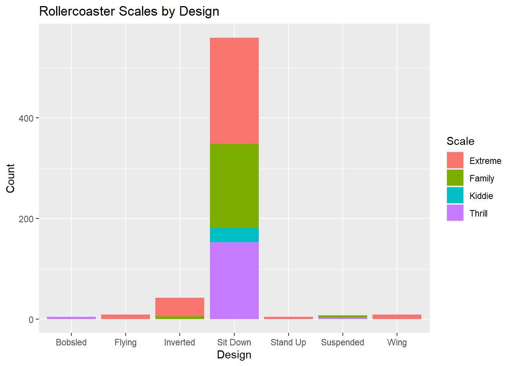
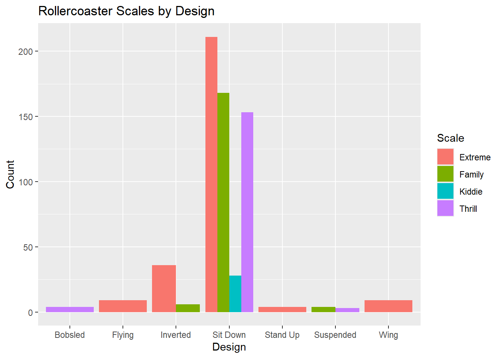

library(tidyverse)
library(httr)
library(jsonlite)ST558_HW5_Nowak
Task 1: Querying an API in a Tidy-Style Fashion
Connect to the news API here: newsapi.org
1.
Use GET() from the httr package to return information about a topic that you are interested in that has been in the news lately (store the result as an R object).
news_pull <- GET("https://newsapi.org/v2/everything?q=Iran&from=2026-09-18&language=en&pageSize=50&apiKey=71ce2ed6f6844a9b8c771a2b3993de20")2.
Parse what is returned and find your way to the data frame that has the actual article information in it (check content). Note the first column should be a list column!
#Check top-level contents
str(news_pull, max.level=1)List of 10
$ url : chr "https://newsapi.org/v2/everything?q=Iran&from=2026-09-18&language=en&pageSize=50&apiKey=71ce2ed6f6844a9b8c771a2b3993de20"
$ status_code: int 200
$ headers :List of 12
..- attr(*, "class")= chr [1:2] "insensitive" "list"
$ all_headers:List of 1
$ cookies :'data.frame': 0 obs. of 7 variables:
$ content : raw [1:43949] 7b 22 73 74 ...
$ date : POSIXct[1:1], format: "2026-09-23 18:39:10"
$ times : Named num [1:6] 0 0.0642 0.0774 0.2063 0.4053 ...
..- attr(*, "names")= chr [1:6] "redirect" "namelookup" "connect" "pretransfer" ...
$ request :List of 7
..- attr(*, "class")= chr "request"
$ handle :Class 'curl_handle' <externalptr>
- attr(*, "class")= chr "response"#Parse to contents
news_parse <- fromJSON(rawToChar(news_pull$content))
str(news_parse, max.level=1)List of 3
$ status : chr "ok"
$ totalResults: int 3757
$ articles :'data.frame': 49 obs. of 8 variables:#Select articles
news_data <- as_tibble(news_parse$articles)
news_data# A tibble: 49 × 8
source$id $name author title description url urlToImage publishedAt content
<chr> <chr> <chr> <chr> <chr> <chr> <chr> <chr> <chr>
1 bbc-news BBC … https… Iran… "The G7 al… http… https://i… 2026-09-22… "Saudi…
2 <NA> Gizm… Kyle … Pent… "An unrele… http… https://g… 2026-09-20… "Back …
3 <NA> Gizm… Matt … ‘Alm… "One sourc… http… https://g… 2026-09-19… "The U…
4 <NA> Gizm… Matt … Are … "There's a… http… https://g… 2026-09-18… "A vid…
5 <NA> NPR The A… Saud… "Saudi Ara… http… https://n… 2026-09-20… "Saudi…
6 <NA> NPR Aya B… Hout… "As the U.… http… https://n… 2026-09-22… "DUBAI…
7 <NA> Abcn… Chris… Some… "The U.S. … http… https://i… 2026-09-21… "A gro…
8 newsweek News… Gabe … Trum… "President… http… https://a… 2026-09-22… "Presi…
9 <NA> Yaho… NASSE… Hund… "CAIRO (AP… http… https://s… 2026-09-18… "CAIRO…
10 cnn CNN Moham… Iran… "Flames an… http… https://m… 2026-09-21… "As wo…
# ℹ 39 more rows3.
Now write a quick function that allows the user to easily query this API. The inputs to the function should be the title/subject to search for (string), a time period to search from (string - you’ll search from that time until the present), and an API key.
pullFromNews <- function(subject, startdt, key) {
URL <- paste0("https://newsapi.org/v2/everything?q=", as.character(subject),
"&from=", as.character(startdt),
"&to=", as.character(Sys.Date()),
"&language=en&pageSize=50&apiKey=", key)
pulled <- GET(URL)
#Note: missing function inputs result in R error.
if(pulled$status != 200) { return("Something broke, check requirements.") }
else {
parsed <- fromJSON(rawToChar(pulled$content))
tdata <- as_tibble(parsed$articles)
return(tdata)
}
}Test Function:
mykey <- "71ce2ed6f6844a9b8c771a2b3993de20"
#Test 1
pullFromNews(subject="Iran", startdt= "2026-09-18", key=mykey)# A tibble: 49 × 8
source$id $name author title description url urlToImage publishedAt content
<chr> <chr> <chr> <chr> <chr> <chr> <chr> <chr> <chr>
1 bbc-news BBC … https… Iran… "The G7 al… http… https://i… 2026-09-22… "Saudi…
2 <NA> Gizm… Kyle … Pent… "An unrele… http… https://g… 2026-09-20… "Back …
3 <NA> Gizm… Matt … ‘Alm… "One sourc… http… https://g… 2026-09-19… "The U…
4 <NA> Gizm… Matt … Are … "There's a… http… https://g… 2026-09-18… "A vid…
5 <NA> NPR The A… Saud… "Saudi Ara… http… https://n… 2026-09-20… "Saudi…
6 <NA> NPR Aya B… Hout… "As the U.… http… https://n… 2026-09-22… "DUBAI…
7 <NA> Abcn… Chris… Some… "The U.S. … http… https://i… 2026-09-21… "A gro…
8 newsweek News… Gabe … Trum… "President… http… https://a… 2026-09-22… "Presi…
9 <NA> Yaho… NASSE… Hund… "CAIRO (AP… http… https://s… 2026-09-18… "CAIRO…
10 cnn CNN Moham… Iran… "Flames an… http… https://m… 2026-09-21… "As wo…
# ℹ 39 more rows#Test 2
pullFromNews(subject="Apple", startdt= "2026-09-01", key=mykey)# A tibble: 22 × 8
source$id $name author title description url urlToImage publishedAt content
<chr> <chr> <chr> <chr> <chr> <chr> <chr> <chr> <chr>
1 the-verge The … Stevi… Appl… "Apple ann… http… https://p… 2026-09-09… "<ul><…
2 wired Wired Bouta… Appl… "Apple’s l… http… https://m… 2026-09-09… "Apple…
3 wired Wired WIRED Appl… "Get all t… http… https://m… 2026-09-09… "Good …
4 the-verge The … John.… Appl… "Today, Ap… http… https://p… 2026-09-09… "Today…
5 the-verge The … Victo… Hand… "After App… http… https://p… 2026-09-09… "<ul><…
6 the-verge The … Brad … Wher… "The Apple… http… https://p… 2026-09-11… "<ul><…
7 the-verge The … Emma … Appl… "Apple is … http… https://p… 2026-09-01… "<ul><…
8 the-verge The … Nilay… Can … "Today, I’… http… https://p… 2026-09-21… "<ul><…
9 the-verge The … Jenni… Appl… "With the … http… https://p… 2026-09-14… "<ul><…
10 the-verge The … Brad … How … "Apple rol… http… https://p… 2026-09-09… "<ul><…
# ℹ 12 more rows#Test 3 (expected to fail)
pullFromNews(subject="Apple", startdt= "2026-08-01", key=mykey) #Date too old[1] "Something broke, check requirements."pullFromNews(subject="Apple", startdt= "2026-09-01", key="123ABC") #Bad Key[1] "Something broke, check requirements."Task 2: Summarizing Roller Coaster Data
Working with the roller coaster data. Source: https://www4.stat.ncsu.edu/online/datasets/635USrollercoasters.csv
Read-in data and convert variables to factors as needed. No need to use the Boundary variable or the Latitude and Longitude variables in the EDA.
rollercoasters <- read_csv("635USrollercoasters.csv") Rows: 635 Columns: 21
── Column specification ────────────────────────────────────────────────────────
Delimiter: ","
chr (12): Coaster, Park, City, State, Census Region, AgeGroup, Scale, Type, ...
dbl (9): Year Opened, TopSpeed, MaxHeight, Drop, Length, Duration, # of Inv...
ℹ Use `spec()` to retrieve the full column specification for this data.
ℹ Specify the column types or set `show_col_types = FALSE` to quiet this message.names(rollercoasters) [1] "Coaster" "Park" "City" "State"
[5] "Census Region" "Year Opened" "AgeGroup" "TopSpeed"
[9] "MaxHeight" "Scale" "Type" "Design"
[13] "Drop" "Length" "Duration" "Inversions?"
[17] "# of Inversions" "Make" "Latitude" "Longitude"
[21] "Boundary" #Preliminary Cleaning:
rollercoasters <- rollercoasters |>
#drop variables we don't need:
select(-c(Boundary, Latitude, Longitude)) |>
#enforce valid column names:
rename(CensusRegion = `Census Region`,
YearOpened = `Year Opened`,
Inversion_YN = `Inversions?`,
Inversion_Num = `# of Inversions` )
names(rollercoasters) [1] "Coaster" "Park" "City" "State"
[5] "CensusRegion" "YearOpened" "AgeGroup" "TopSpeed"
[9] "MaxHeight" "Scale" "Type" "Design"
[13] "Drop" "Length" "Duration" "Inversion_YN"
[17] "Inversion_Num" "Make" 4.
Look at how the data is stored and see if everything makes sense.
str(rollercoasters)tibble [635 × 18] (S3: tbl_df/tbl/data.frame)
$ Coaster : chr [1:635] "Adrenaline Peak" "Adventure Express" "Afterburn" "Aftershock" ...
$ Park : chr [1:635] "Oaks Amusement Park" "Kings Island" "Carowinds" "Silverwood Theme Park" ...
$ City : chr [1:635] "Portland" "Mason" "Charlotte" "Athol" ...
$ State : chr [1:635] "Oregon" "Ohio" "North Carolina" "Idaho" ...
$ CensusRegion : chr [1:635] "West" "Midwest" "South" "West" ...
$ YearOpened : num [1:635] 2018 1991 1999 2008 2010 ...
$ AgeGroup : chr [1:635] "3:Newest" "2:Recent" "2:Recent" "3:Newest" ...
$ TopSpeed : num [1:635] 45 35 62 65.6 22 67 35 66 48 50 ...
$ MaxHeight : num [1:635] 72 63 113 192 25 ...
$ Scale : chr [1:635] "Extreme" "Thrill" "Extreme" "Extreme" ...
$ Type : chr [1:635] "Steel" "Steel" "Steel" "Steel" ...
$ Design : chr [1:635] "Sit Down" "Sit Down" "Inverted" "Inverted" ...
$ Drop : num [1:635] 70 47 110 177 22.5 170 20 147 80 144 ...
$ Length : num [1:635] 1050 2963 2956 1204 628 ...
$ Duration : num [1:635] 66 140 167 92 47 190 100 143 110 110 ...
$ Inversion_YN : chr [1:635] "Yes" "No" "Yes" "Yes" ...
$ Inversion_Num: num [1:635] 3 0 6 3 0 6 0 0 0 4 ...
$ Make : chr [1:635] "Gerstlauer Amusement Rides GmbH" "Arrow Dynamics" "Bolliger & Mabillard" "Vekoma" ...Coaster,Park,City,State, andMakeare fine to store as characterYearOpened,TopSpeed,MaxHeight,Drop,Length,Duration, andInversion_Numare appropriately stored as numeric- All other variables are likely categorical and may be better as factors.
vars_cat <- c("CensusRegion", "AgeGroup", "Scale", "Type", "Design", "Inversion_YN")
for(i in 1:length(vars_cat)){
rollercoasters |>
group_by(across(all_of(vars_cat[i]))) |>
summarize(count=n()) |> print()
}# A tibble: 4 × 2
CensusRegion count
<chr> <int>
1 Midwest 134
2 Northeast 156
3 South 223
4 West 122
# A tibble: 3 × 2
AgeGroup count
<chr> <int>
1 1:Older 69
2 2:Recent 190
3 3:Newest 376
# A tibble: 4 × 2
Scale count
<chr> <int>
1 Extreme 269
2 Family 178
3 Kiddie 28
4 Thrill 160
# A tibble: 2 × 2
Type count
<chr> <int>
1 Steel 530
2 Wood 105
# A tibble: 7 × 2
Design count
<chr> <int>
1 Bobsled 4
2 Flying 9
3 Inverted 42
4 Sit Down 560
5 Stand Up 4
6 Suspended 7
7 Wing 9
# A tibble: 2 × 2
Inversion_YN count
<chr> <int>
1 No 465
2 Yes 170Yes, convert all the suspected categorical variables to factors. AgeGroup was the only variable that benefited from a labeling change.
rollercoasters <- rollercoasters |>
mutate(CensusRegion = as.factor(CensusRegion),
AgeGroup = factor(AgeGroup,
levels=c("1:Older", "2:Recent", "3:Newest"),
labels=c("Older", "Recent", "Newest")),
Scale = as.factor(Scale),
Type= as.factor(Type),
Design=as.factor(Design),
InversionYN=as.factor(Inversion_YN))
str(rollercoasters)tibble [635 × 19] (S3: tbl_df/tbl/data.frame)
$ Coaster : chr [1:635] "Adrenaline Peak" "Adventure Express" "Afterburn" "Aftershock" ...
$ Park : chr [1:635] "Oaks Amusement Park" "Kings Island" "Carowinds" "Silverwood Theme Park" ...
$ City : chr [1:635] "Portland" "Mason" "Charlotte" "Athol" ...
$ State : chr [1:635] "Oregon" "Ohio" "North Carolina" "Idaho" ...
$ CensusRegion : Factor w/ 4 levels "Midwest","Northeast",..: 4 1 3 4 3 3 2 1 1 3 ...
$ YearOpened : num [1:635] 2018 1991 1999 2008 2010 ...
$ AgeGroup : Factor w/ 3 levels "Older","Recent",..: 3 2 2 3 3 2 2 2 3 2 ...
$ TopSpeed : num [1:635] 45 35 62 65.6 22 67 35 66 48 50 ...
$ MaxHeight : num [1:635] 72 63 113 192 25 ...
$ Scale : Factor w/ 4 levels "Extreme","Family",..: 1 4 1 1 2 1 4 1 4 1 ...
$ Type : Factor w/ 2 levels "Steel","Wood": 1 1 1 1 1 1 1 2 2 1 ...
$ Design : Factor w/ 7 levels "Bobsled","Flying",..: 4 4 3 3 4 3 1 4 4 4 ...
$ Drop : num [1:635] 70 47 110 177 22.5 170 20 147 80 144 ...
$ Length : num [1:635] 1050 2963 2956 1204 628 ...
$ Duration : num [1:635] 66 140 167 92 47 190 100 143 110 110 ...
$ Inversion_YN : chr [1:635] "Yes" "No" "Yes" "Yes" ...
$ Inversion_Num: num [1:635] 3 0 6 3 0 6 0 0 0 4 ...
$ Make : chr [1:635] "Gerstlauer Amusement Rides GmbH" "Arrow Dynamics" "Bolliger & Mabillard" "Vekoma" ...
$ InversionYN : Factor w/ 2 levels "No","Yes": 2 1 2 2 1 2 1 1 1 2 ...5.
Document any missing values in the data.
#Function to count NA within column
sum_na <- function(column){
sum(is.na(column))
}
#Apply function, print variables with some missingness
has_na <- rollercoasters |>
summarize(across(everything(), sum_na)) |>
pivot_longer(cols=everything(),
names_to = "Variable",
values_to = "NA_Count") |>
filter(NA_Count > 0)
has_na# A tibble: 6 × 2
Variable NA_Count
<chr> <int>
1 TopSpeed 74
2 MaxHeight 8
3 Drop 128
4 Length 33
5 Duration 66
6 Make 366.
Create a one-way contingency table, a two-way contingency table, and a three-way contingency table for some of the factor variables you created previously. Use table() to accomplish this. Interpret a number from each table.
One-Way Table:
table(rollercoasters$Scale)
Extreme Family Kiddie Thrill
269 178 28 160 This dataset contains 178 roller coasters at the “Family” scale.
Two-Way Table:
table(rollercoasters$Scale, rollercoasters$Design)
Bobsled Flying Inverted Sit Down Stand Up Suspended Wing
Extreme 0 9 36 211 4 0 9
Family 0 0 6 168 0 4 0
Kiddie 0 0 0 28 0 0 0
Thrill 4 0 0 153 0 3 0This dataset contains 6 roller coasters with an Inverted design that were classified as the “Family” scale.
Three-Way Table:
table(rollercoasters$Scale, rollercoasters$Design, rollercoasters$Type), , = Steel
Bobsled Flying Inverted Sit Down Stand Up Suspended Wing
Extreme 0 9 36 158 4 0 9
Family 0 0 6 153 0 4 0
Kiddie 0 0 0 27 0 0 0
Thrill 3 0 0 118 0 3 0
, , = Wood
Bobsled Flying Inverted Sit Down Stand Up Suspended Wing
Extreme 0 0 0 53 0 0 0
Family 0 0 0 15 0 0 0
Kiddie 0 0 0 1 0 0 0
Thrill 1 0 0 35 0 0 0All 6 of the roller coasters with an Inverted design that were classified as the “Family” scale were made from Steel.
7.
Create a conditional two-way table using table(). That is, condition on one variable’s setting and create a two-way table. Do this using two different methods:
By subsetting first:
rollercoasters |> filter(Type=="Steel") |> select(Scale, Design) |> table() Design
Scale Bobsled Flying Inverted Sit Down Stand Up Suspended Wing
Extreme 0 9 36 158 4 0 9
Family 0 0 6 153 0 4 0
Kiddie 0 0 0 27 0 0 0
Thrill 3 0 0 118 0 3 0#select after filter to accomplish everything in one chainBy subsetting a 3-way:
table(rollercoasters[, c("Scale", "Design", "Type")])[,,1] Design
Scale Bobsled Flying Inverted Sit Down Stand Up Suspended Wing
Extreme 0 9 36 158 4 0 9
Family 0 0 6 153 0 4 0
Kiddie 0 0 0 27 0 0 0
Thrill 3 0 0 118 0 3 0#earlier three-way crosstab confirmed 'Steel' was 1st level of Type8.
Create a two-way contingency table using group_by() and summarize() from dplyr. Then use pivot_wider() to make the result look more like the output from table().
rollercoasters |>
group_by(Scale, Design) |>
summarize(count = n()) |>
pivot_wider(names_from = Design,
values_from = count,
values_fill=0) #fill in zero count for unrepresented pairings`summarise()` has grouped output by 'Scale'. You can override using the
`.groups` argument.# A tibble: 4 × 8
# Groups: Scale [4]
Scale Flying Inverted `Sit Down` `Stand Up` Wing Suspended Bobsled
<fct> <int> <int> <int> <int> <int> <int> <int>
1 Extreme 9 36 211 4 9 0 0
2 Family 0 6 168 0 0 4 0
3 Kiddie 0 0 28 0 0 0 0
4 Thrill 0 0 153 0 0 3 4Note: Columns are arranged in a different order than what was produced by the table() function. Also, some of the levels from Design were not valid column names. Something to keep in mind.
9.
Create a stacked bar graph and a side-by-side bar graph. Give relevant x and y labels, and a title for the plots.
Stacked:
library(ggplot2)
ggplot(data=rollercoasters, aes(x=Design, fill=Scale)) +
geom_bar() +
labs(title="Rollercoaster Scales by Design",
x="Design", y="Count")
Not the best style for interpreting these two factors.
Side-by-Side:
library(ggplot2)
ggplot(data=rollercoasters, aes(x=Design, fill=Scale)) +
geom_bar(position="dodge") +
labs(title="Rollercoaster Scales by Design",
x="Design", y="Count")
Somewhat better, but still tough to interpret given that “Sit Down” design is a super majority accounting for 88% of the records.